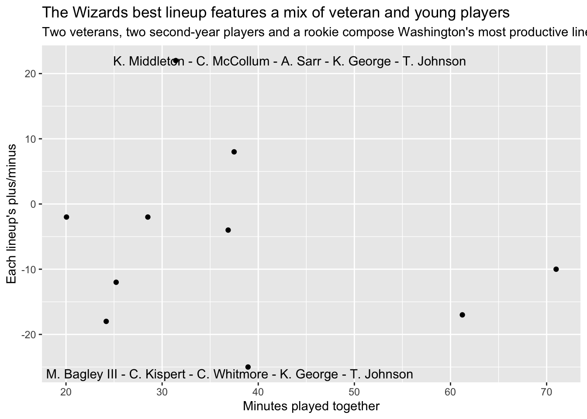

The Wizards have relied on a few young pieces within their best lineup
Author
Dylan Schmidt
library(hoopR)library(tidyverse)
── Attaching core tidyverse packages ──────────────────────── tidyverse 2.0.0 ──
✔ dplyr 1.1.4 ✔ readr 2.1.5
✔ forcats 1.0.0 ✔ stringr 1.5.1
✔ ggplot2 3.5.1 ✔ tibble 3.2.1
✔ lubridate 1.9.4 ✔ tidyr 1.3.1
✔ purrr 1.0.2
── Conflicts ────────────────────────────────────────── tidyverse_conflicts() ──
✖ dplyr::filter() masks stats::filter()
✖ dplyr::lag() masks stats::lag()
ℹ Use the conflicted package (<http://conflicted.r-lib.org/>) to force all conflicts to become errors
library(ggrepel)library(janitor)
Attaching package: 'janitor'
The following objects are masked from 'package:stats':
chisq.test, fisher.test
lineups_raw <-nba_teamdashlineups(team_id ="1610612764",season ="2025-26",season_type ="Regular Season")lineups_df <- lineups_raw$Lineups |>as_tibble() |>clean_names()overall_df <- lineups_raw$Overall |>as_tibble() lineups_df <- lineups_df |>mutate(min =as.numeric(min))lineups_df <- lineups_df |>mutate(plus_minus =as.numeric(plus_minus))lineups_filtered <- lineups_df |>filter(min >=20)best_and_worst_lineup <- lineups_filtered |>filter(plus_minus >20| plus_minus <-20)ggplot() +geom_point(data=lineups_filtered, aes(x=min, y=plus_minus)) +labs(title="The Wizards best lineup features a mix of veteran and young players", subtitle="Two veterans, two second-year players and a rookie compose Washington's most productive lineup",x="Minutes played together", y="Each lineup's plus/minus") +geom_text_repel(data=best_and_worst_lineup, aes(x=min, y=plus_minus, label=group_name))

The Wizards, tied for the fewest wins in the league, continue to navigate a long-term rebuild centered around developing young pieces. Because of that, their early-season lineup data offers a revealing look at which combinations actually work and which ones still need major adjustment. The gap between Washington’s strongest and weakest units is stark, emphasizing how volatile a rebuilding roster can be.
The most effective lineup features Khris Middleton, CJ McCollum, Alex Sarr, Kyshawn George, and Tre Johnson, and it currently boasts an impressive +22 plus/minus. This group succeeds because it blends veteran leadership with emerging talent. Middleton and McCollum bring structure, shot creation, and calm decision-making, while Sarr anchors the interior with length and mobility. George and Johnson provide energy, defensive versatility, and off-ball movement, giving the Wizards one of their few lineups that consistently elevates the team’s overall efficiency.
Offensively, this positive group works because of its spacing and balance. Middleton and McCollum demand defensive attention, freeing Sarr as a roller and allowing George and Johnson to attack closeouts or connect plays. They generate clean looks, limit turnovers, and maintain rhythm—something the Wizards struggle to do with more developmental lineups. Their +22 mark reflects possessions that feel purposeful and connected rather than improvised.
On the opposite end of the spectrum, the worst-performing lineup—Marvin Bagley III, Corey Kispert, Cam Whitmore, Kyshawn George, and Tre Johnson—holds a troubling –25 plus/minus. This unit noticeably lacks a true initiator, often relying on difficult shots late in the clock. Bagley’s interior-focused game clashes with Whitmore’s slashing, and without a stabilizing veteran presence, the offense stalls. The spacing becomes cramped, the ball sticks, and quality attempts become rare.
Defensively, the issues grow even more pronounced. Without a rim-protecting big or a defensive leader, this lineup frequently allows uncontested drives, miscommunicates on switches, and gives up second-chance points. The –25 differential reflects not just missed shots, but structural problems on both ends. Taken together, the difference between Washington’s best and worst lineups shows why a young, rebuilding team tied for the fewest wins is still searching for combinations that offer stability and long-term promise.